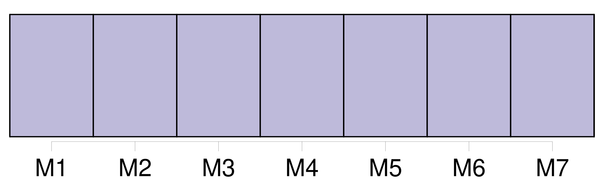
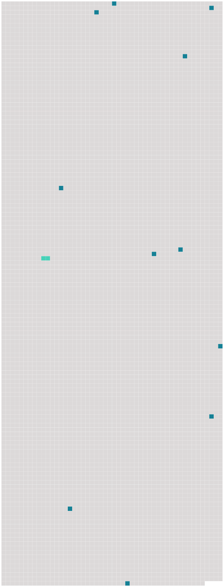

Longueur nb maillons : 12 mentions |
 |
Elle habitait avec ses parents la belle propriété de St-Jean, qui domine la jonction de l'Arve avec le Rhône, en aval de [Genève] [1 phrases]
On sait qu'au début de son séjour dans notre pays, Voltaire habita en été Les Délices près [Genève] , en hiver tantôt Monrion, près Lausanne, tantôt cette ville -même, au faubourg du Petit-Chêne. À Lausanne comme à [Genève] , Voltaire avait trouvé une société très aimable et lettrée, toute disposée à jouer ses tragédies. [14 phrases]
Quelquefois Samuel revenait pour lui donner la réplique, et alors la jeune femme jouissait de tout son cœur des répits que lui laissaient soit une santé déjà très compromise, soit l'arrivée successive des enfants que l'on mettait en nourrice dans les environs de [Genève] [70 phrases] Rosalie et ses frères et sœur habitaient tantôt [Genève] avec leur père, tantôt St-Jean avec M. et Mme Pictet. [25 phrases] Rosalie eut peu d'amies à [Genève] [1 phrases] Cela tient, nous dit -elle elle -même quelque part, à ce que dans ce temps -là les portes de [Genève] se fermaient en hiver à quatre ou cinq heures et que, lorsqu'on habitait la campagne, il était impossible de pénétrer dans [la cité] passé ce moment. [49 phrases] Il s'attacha à l'une des femmes les plus distinguées de [Genève] et consacra plusieurs années à lui faire partager ses sentimens. [32 phrases] Dès les premières heures, le second mariage de Samuel amena aux foyers de St-Jean et de [Genève] plus d'amertume que de consolations. [37 phrases]
Le principal but était de faire redresser la taille de Rosalie par l'ami de leur père, le Dr Tronchin, qui venait de quitter [Genève] pour Paris. [37 phrases] Parties de St-Jean le 3 décembre 1772, en compagnie de leur grand'mère et de trois autres dames de [Genève] , nos voyageuses atteignirent Paris le 9 au soir et eurent grand'peine à s'y loger. |
 |
Il est possible de télécharger la ressource sur la page Ortolang |
Si vous avez des questions ou vous voyez des erreurs, merci d'envoyer un mail à silvia.federzoni89@gmail.com |